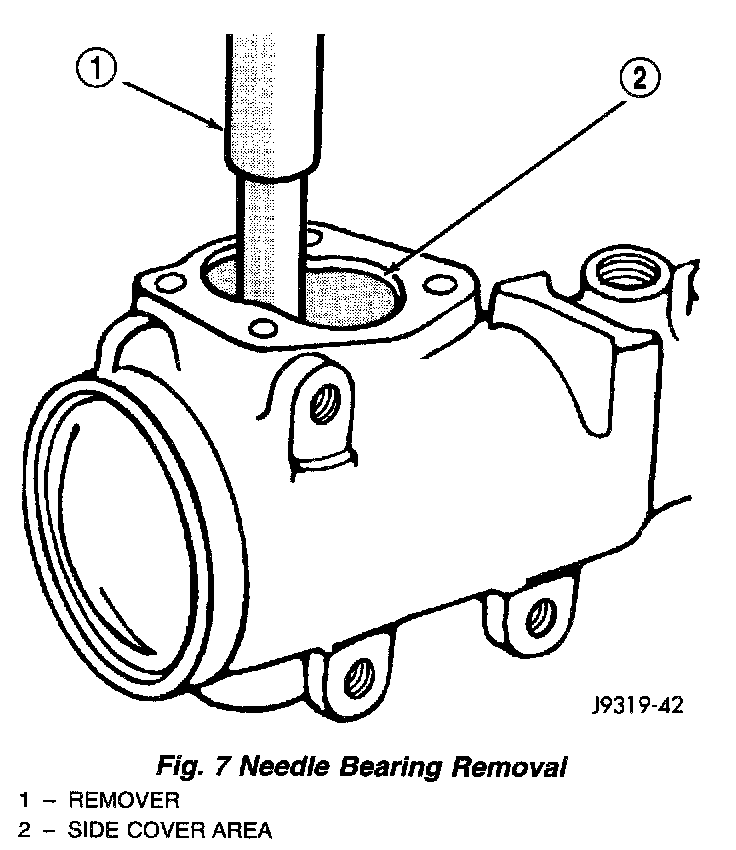

Pitman Shaft/Seals/Bearing
REMOVAL1. Remove pitman arm from gear.
2. Clean exposed end of pitman shaft and housing with a wire brush.
3. Remove dust seal.

4. Remove retaining ring with snap ring pliers.
5. Remove backup washer with screwdriver.
CAUTION: Use care not to score the housing bore when prying out seals and washers.
6. Remove oil seal with screwdriver.
7. Inspect the housing for burrs and remove if necessary.
Fig. 7:

8. Remove needle bearing from housing.
INSTALLATION
1. Install needle bearing into housing.
2. Coat the oil seal and washers with grease.
3. Install the oil seal with a suitable size deep socket.
4. Install backup washer.
5. Install the retainer ring with snap ring pliers.
6. Install dust seal with a suitable size deep socket.